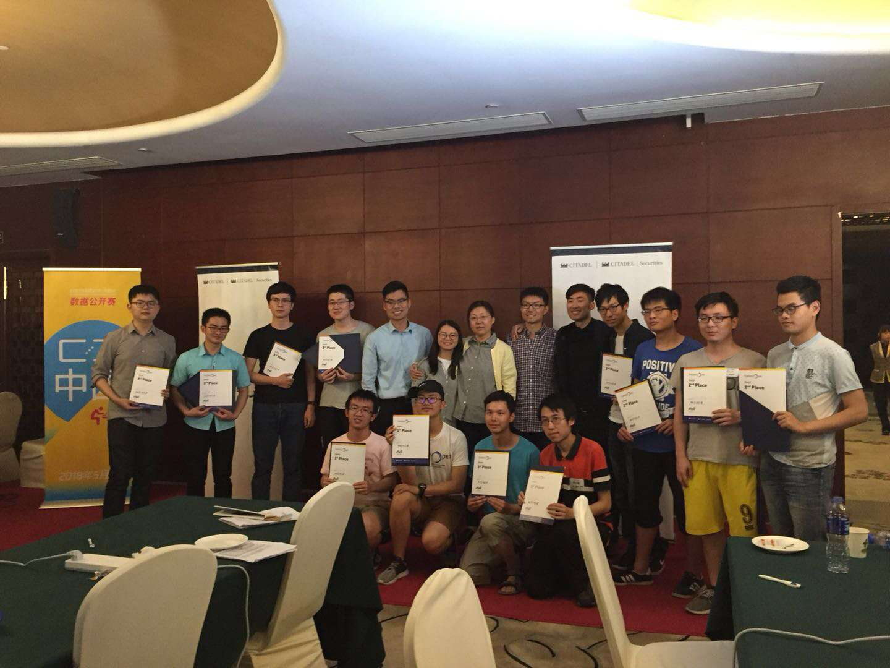

Ziming Liu

I am an incoming PhD student at MIT and IAIFI, advised by Max Tegmark. I mainly focus on the intersection of artificial intelligence and physics. My CV is here.
My research interests inlcude but are not limted to: (1) Learning scientific knowledge from data: e.g. conservation laws and symbolic formulas; (2) Understanding and enhancing machine learning with tools from physics, information and biology; (3) Artificial general intelligence: how to model a scientist?; (4) Real-life applications of AI beyond science.
Projects
- AI Poincaré: Machine Learning Conservation Laws from Trajectories: , arXiv:2011.04698. (Ziming Liu and Max Tegmark)
Comment: We present AI Poincaré, a machine learning algorithm for auto-discovering conserved quantities using trajectory data from unknown dynamical systems. We released our code on PyPI here, and you could simply install aipoincare package by typing in 'pip install aipoincare'.
- Schrodinger PCA: You only Need Variances for Eigenmodes, arXiv:2002.06061. (Ziming Liu, Sitian Qian, Yixuan Wang, Yuxuan Yan and Tianyi Yang)
Comment: We make an intriguing connection between quantum mechanics and principal component analysis. Please also check the video here.
- Quantum-Inspired Hamiltonian Monte Carlo for Bayesian Sampling, arXiv:1912.01937 (Ziming Liu and Zheng Zhang)
Comment: What will happen when quantum mechanics meets hamiltonian monte carlo? The quantum mass achieves better sampling results on spiky and multi-modal distributions.

- Principal Component Analysis of Collective Flow in Relativistic Heavy-Ion Collisions, published in European Physical Journal C. (Ziming Liu, Wenbin Zhao and Huichao Song)
- Influenza Modeling Based on Massive Feature Engineering and International Flow Deconvolution, arXiv: 1912.02989 (Ziming Liu, Yixuan Wang, Zizhao Han, Dian Wu)
Comment: This project is for the "DataOpen" Competition held by Citadel & Correlation One. We won the champion in the Beijing competition!
- Robustness of principal component analysis on harmonic flow in heavy ion collisions, arXiv:2002.06061. (Ziming Liu, Arabinda Behera, Huichao Song, Jiangyong Jia)
Comment: Sometimes experiments are very different from theory, so we need to be really careful! We provide a example that sub-leading flow can be arisen from non-flow effects in experiments.
Comment: why do scientists use Fourier bases to decompose flow data? In this paper, we provide a tentative answer towards this question with the help of principal component analysis (PCA).